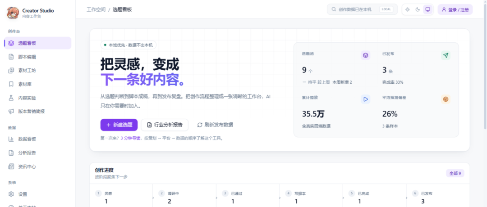
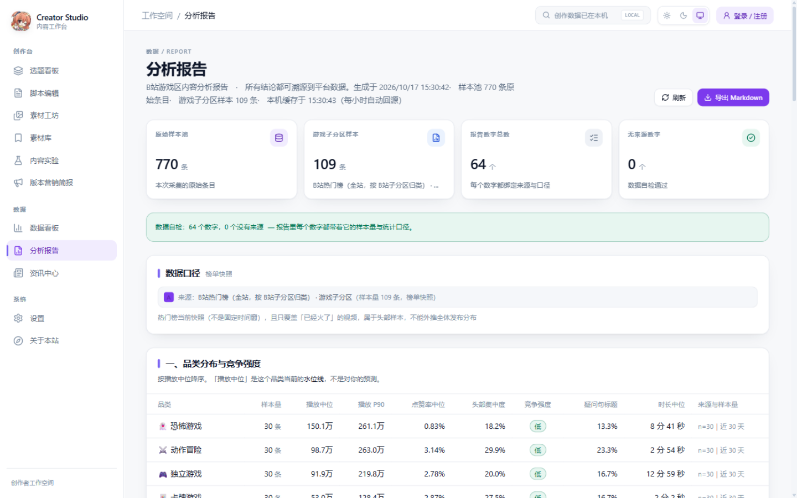

内容创作里最关键的判断——选题值不值得做、脚本适配哪个平台、发布后的数据说明了什么——往往靠感觉。 这个项目把它们变成一套可操作、可复核的工作流：每个数字都有出处，每个结论都有边界。
| 内容工作中的问题 | 项目里的做法 |
|---|---|
| 这个选题值不值得做？ | 品类播放分位、互动率水位线给依据；样本不足时直接不给结论 |
| 这条脚本发 B站 还是抖音？ | 平台适配检查：同一份脚本两个平台给出不同结论，每条建议带出处与 A/B/C 证据等级 |
| 发布后到底准不准？ | 粘贴 B站链接精确取数，AI 预估与真实播放逐条对账；缺数据的样本单列，不补 0 |
| 汇报时被问「这数字哪来的」？ | 分析报告为每个数字记录来源、样本量、时间窗与统计方法，可导出 Markdown |
| 方案和结果怎么区分？ | 版本营销简报写清目标、人群、卖点依据与传播节奏，计划值不写成达成结果 |
| 改动真的有效吗？ | 内容实验：单一变量、样本门槛与人工复盘；样本不足时拒绝下「成功」结论 |

| 能力方向 | 项目中的对应能力 | 可查看的页面与证据 |
|---|---|---|
| 内容运营 · 内容策划 | 从选题、脚本、平台适配、发布回填到复盘的完整链路 | 选题看板、脚本编辑、平台适配检查、发布记录、内容实验 |
| 创作者运营 | 把内容方向沟通与发布后复盘组织为可追踪的流程 | 选题状态流转、复盘标签、内容实验（不包含合同、结算与 CRM） |
| 数据与工程 | 数据口径设计、可溯源报告、本地优先与账号制云同步 | 分析报告、预测校准、数据看板、同步设置 |

/x/space/wbi/arc/search 稳定返回 -352 风控校验失败（带 WBI 签名与 cookie 也一样），而单条取数接口 8/8 成功。改为「粘贴链接精确取数」，同时消灭了「标题匹配错人」这一类错误。报告里的每个数字都绑定来源、样本量、时间窗与统计方法；拿不到数据就显示「暂无数据」，绝不用 0 或占位数字代替。程序自检统计「无来源数字」，必须为 0。
演示数据明确标注；简报的计划值与复盘结果分栏显示；内容实验设样本门槛，样本不足时拒绝下「成功」结论；报告逐条写明统计局限。